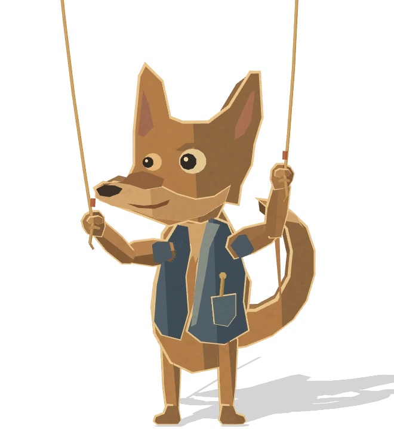
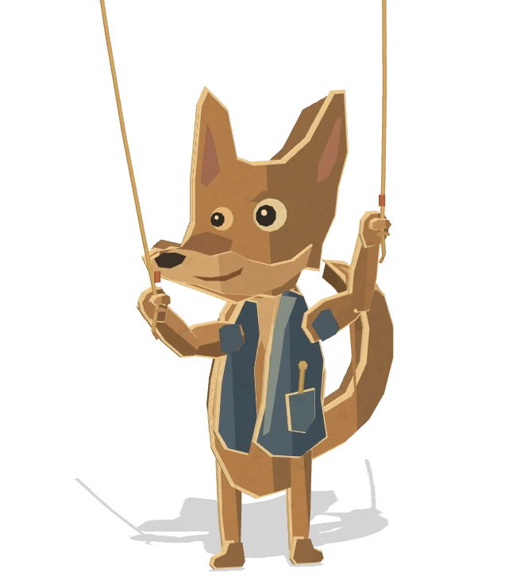
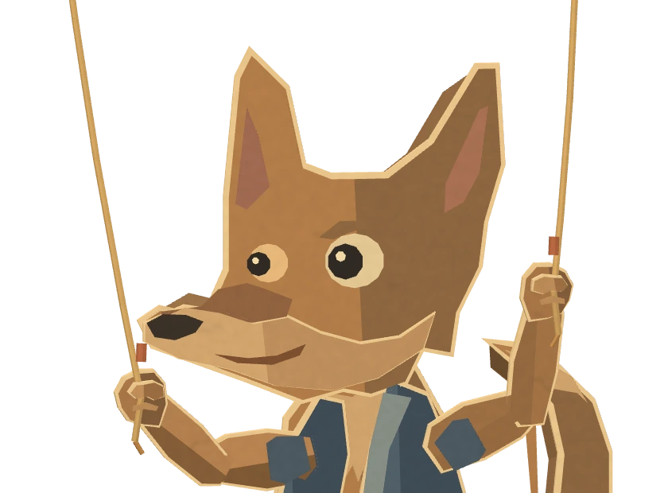
A
臺灣犬
巷口修燈師
制服口袋插支螺絲起子。燈一拉緊，牠先豎耳、再回頭看畫心願的街坊，兩爪穩穩握著繩。
街角的決策智慧 ／ 天燈廣場選角
同樣一幕，五種握繩的方式。書中由臺灣穿山甲掌燈，等畫心願的白面鼯鼠點頭。



制服口袋插支螺絲起子。燈一拉緊，牠先豎耳、再回頭看畫心願的街坊，兩爪穩穩握著繩。
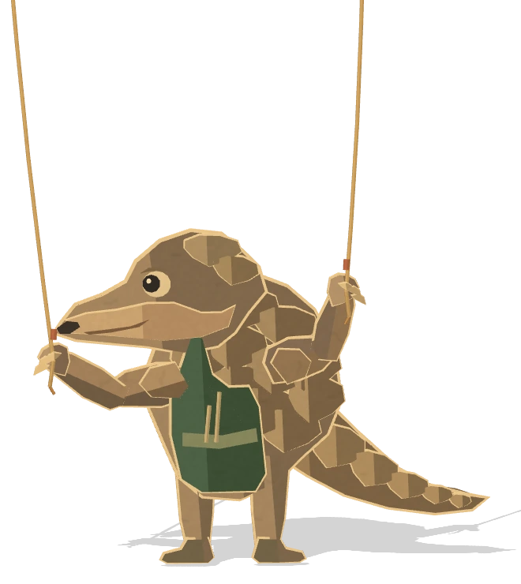
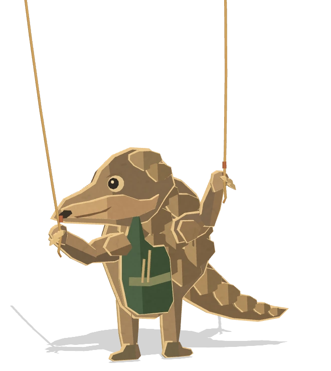
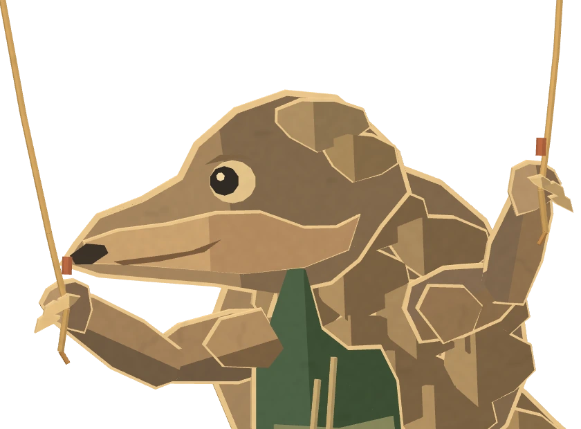
短圍裙裡收兩根竹篾。牠低頭扶正貼歪的紅心，再用兩爪勾住繩結。等白面鼯鼠點頭，才逐爪鬆開。
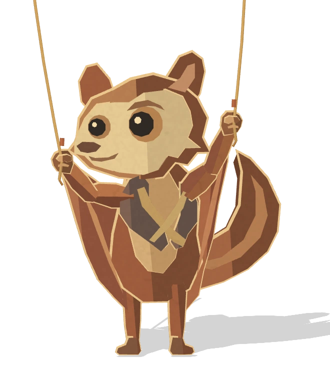
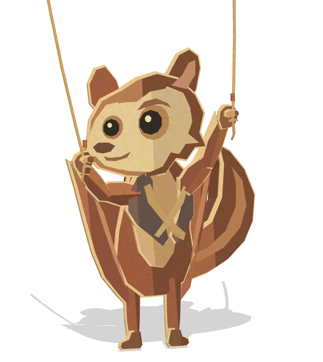
一陣風拉起燈，兩側栗色飛膜跟著繃緊。牠收住腳步，看著畫心願的街坊，連尾巴也停了下來。
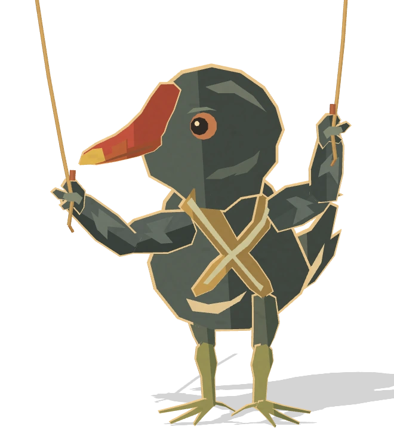
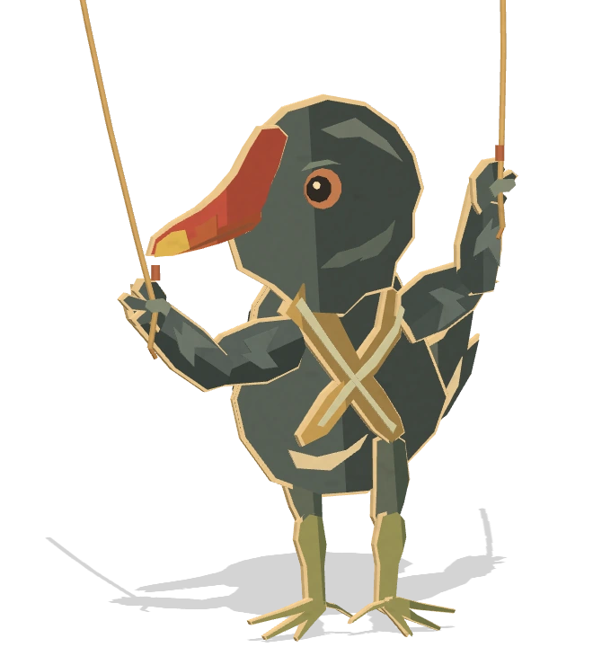
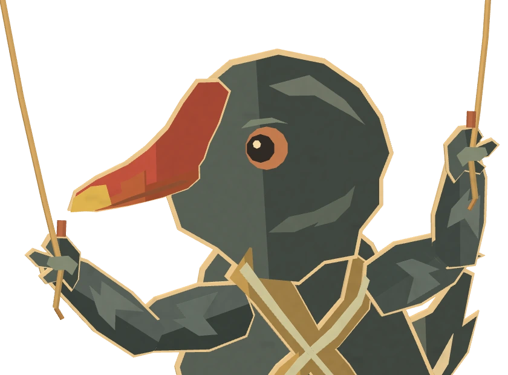
長腳趾岔開，站穩河堤石階。紅嘴轉向等待放燈的人，羽尖仍捏著兩條繩，聽到答應才展翼。
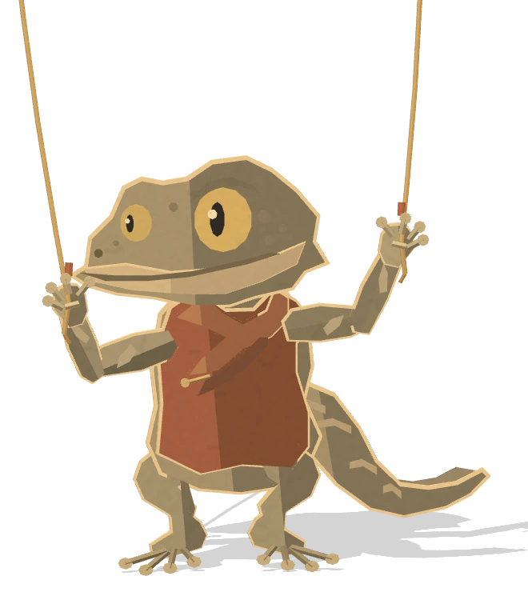
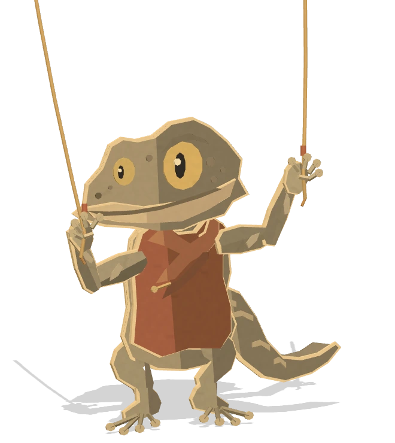
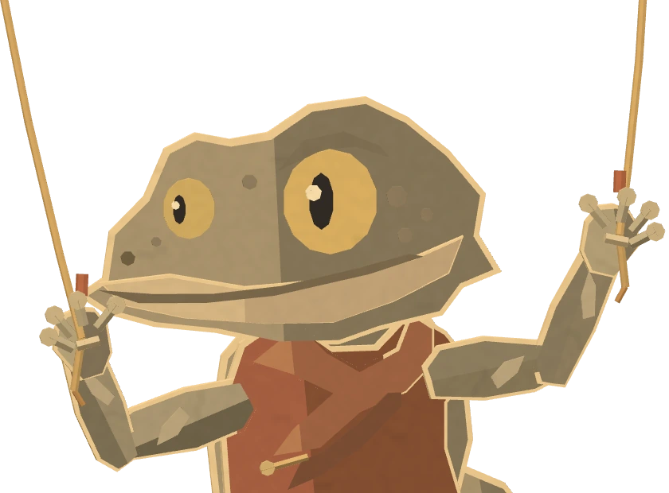
平常趴在廟埕廊柱上顧燈。牠用寬指瓣夾緊細繩，點頭之後一根一根張開，放手的瞬間最清楚。